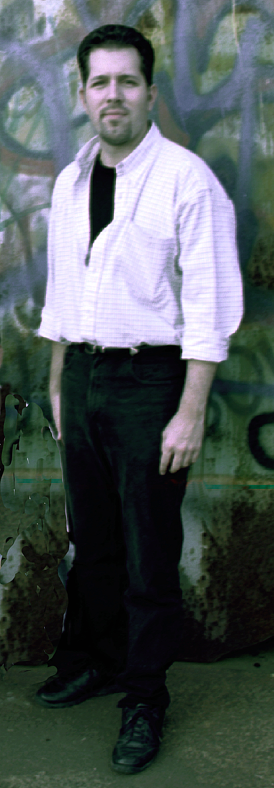

http://www.crosstowntraffic.com
jvaro@doce.lsu.edu
Jonathan Varo (b. 1972) is a graduate of the Berklee College of Music in Boston,
Massachusetts and holds a dual degree in Music Synthesis and Film Scoring. He is
the recipient of the 1994 Wendy Carlos Award for Sound Design at Berklee and has
performed his computer-music compositions all throughout the United States. He
has studied composition with Berklee professor, Dr. Richard Boulanger and LSU
professor, Dr. Stephen David Beck and is presently studying vocal performance
with Irvin Fricke, Jr. In 1999, Varo joined the Fricke School of Music in New
Orleans as an instructor, teaching both vocal and piano performance and
songwriting. With his performance group, Crosstown Traffic, Varo performs as
keyboardist and vocalist and has opened for numerous national acts such as War,
Irma Thomas and The Little River Band. He has performed on the Walton and Johnson
show, the #1 morning show in Louisiana and Mississippi and currently performs in
venues stretching across the country from Florida to Colorado.
Jonathan Varo
16441 S. Harrell’s Ferry Road, #3908
Baton Rouge, LA 70816